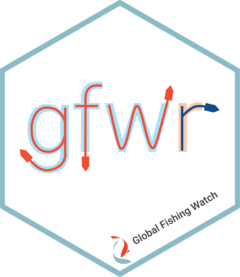

Package index
-
gfw_vessel_info() - Base function to get vessel information from API and convert response to tibble
-
gfw_ais_presence() - Retrieve vessel presence from AIS data and convert response to tibble
-
gfw_ais_fishing_hours() - Retrieve apparent fishing hours derived from AIS data and convert response to tibble
-
gfw_last_report() - Base function to get status of last report generated
-
gfw_event() - Get events from API and convert response to tibble
-
gfw_event_stats() - Get events stats from API and convert response to tibble
-
gfw_sar_vessel_detections() - Retrieve vessel presence detected using SAR and convert response to tibble
-
gfw_auth() - Get user API token from .Renviron
-
gfw_region_id() - Function to pull region code using region name and viceversa
-
gfw_regions() - List of available regions in Global Fishing Watch platforms, EEZs, MPAs, and RFMOs
-
marine_regions - Simplified Marine Regions v12 dataset
-
test_shape - A sample shapefile